Contenus Opquast V5 - série essentielle V2
Présentation - Contenus Opquast V5 - série essentielle V2
Slide 1 sur 12 - Contenus
Slide 1 - Contenus
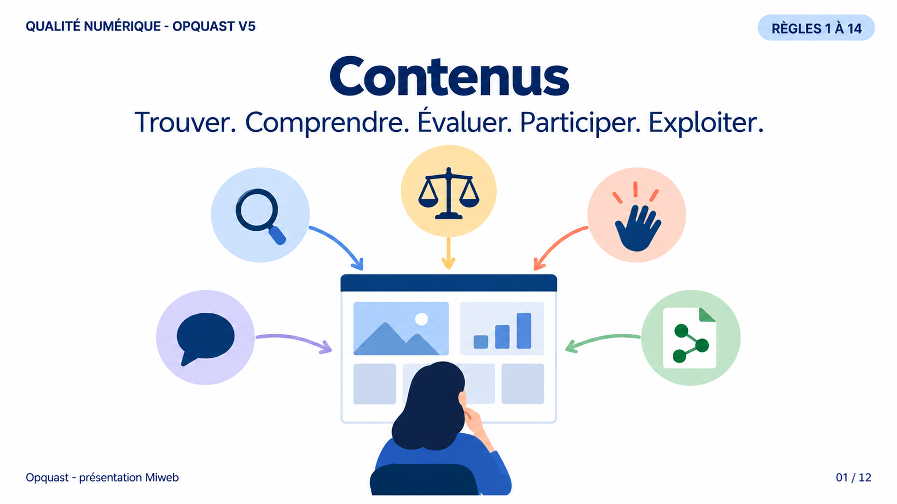
Thématique
Contenus
- Trouver.
- Comprendre.
- Évaluer.
- Participer.
- Exploiter.
Périmètre
Règles 1 à 14.
Message à retenir
Trouver. Comprendre. Évaluer. Participer. Exploiter.
L'information comme service
- Le contenu constitue une partie de ce que l'utilisateur vient chercher dans un service numérique.
- Les règles de cette rubrique formulent des exigences observables qui préviennent des risques d'usage.
- Elles ne jugent pas, à elles seules, la valeur, la vérité ou l'intérêt de l'information.
- Leur mise en œuvre peut concerner la rédaction, le CMS, les gabarits, le design ou les fonctionnalités.
Transition
Les cinq capacités donnent une lecture cohérente des quatorze règles.
Slide 2 - Cinq capacités pour rendre l'information utile
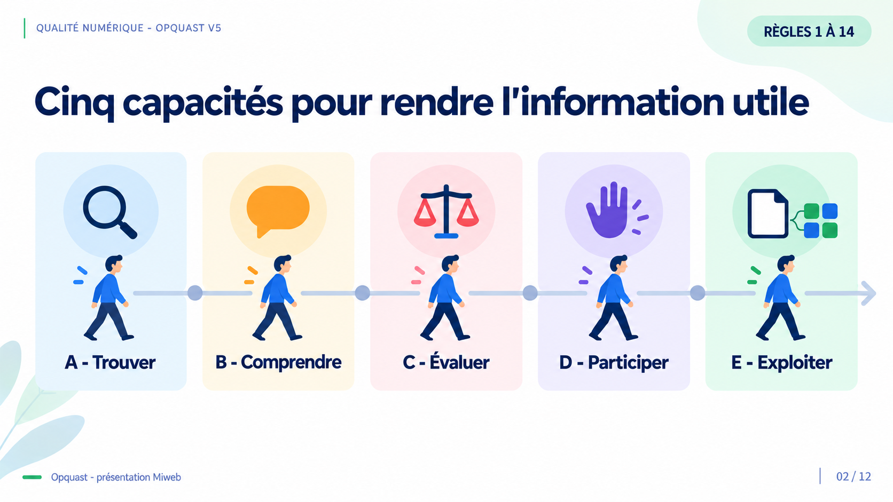
Les cinq capacités
- A - Trouver
- B - Comprendre
- C - Évaluer
- D - Participer
- E - Exploiter
Périmètre
Règles 1 à 14.
Message à retenir
Cinq capacités organisent les quatorze règles de la rubrique Contenus.
Carte de lecture
- Trouver réunit les règles 1, 3 et 13.
- Comprendre réunit les règles 4, 5 et 7.
- Évaluer réunit les règles 2, 6 et 8.
- Participer réunit les règles 9, 10 et 11.
- Exploiter réunit les règles 12 et 14.
Portée
- Ce regroupement aide à lire les quatorze règles sans remplacer la classification officielle du référentiel.
- Une règle décrit une exigence et un risque utilisateur, sans imposer une solution technique unique.
- Les quatorze règles de la rubrique ne résument pas toute la qualité éditoriale, qui reste transversale au référentiel.
Transition
Le parcours commence quand l'utilisateur cherche à repérer une information.
Slide 3 - Repérer ce qui est nouveau
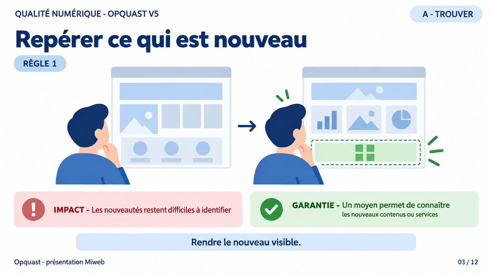
Règle 1
Il est possible de connaître les nouveaux contenus ou services.
Impact
Les nouveautés restent difficiles à identifier.
Garantie
Un moyen permet de connaître les nouveaux contenus ou services.
Message à retenir
Rendre le nouveau visible.
Retrouver les nouveautés
- Une personne qui revient sur un service ne devrait pas devoir parcourir toutes ses rubriques pour identifier ce qui a changé.
- Le moyen d'information peut être interne, comme une rubrique d'actualités, ou externe, comme un canal d'actualité accessible depuis la page d'accueil.
- Ces moyens sont des solutions possibles, pas une liste imposée par la règle.
Impact du non-respect
- Les contenus récents restent noyés parmi ceux qui étaient déjà présents.
- L'utilisateur risque de manquer une nouveauté utile ou d'abandonner sa recherche.
Ce que garantit la règle
- Le service fournit un moyen d'identifier ses nouveaux contenus ou services.
- Cette visibilité facilite aussi leur prise en compte par les outils d'indexation.
Transition
Une nouveauté repérable doit encore être décrite avant l'ouverture de la page.
Slide 4 - Décrire chaque page pour les outils de recherche
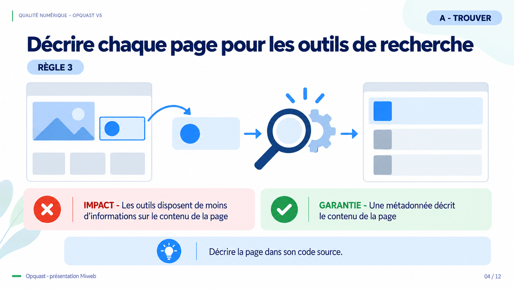
Règle 3
Le code source de chaque page contient une métadonnée qui en décrit le contenu.
Impact
Les outils disposent de moins d'informations sur le contenu de la page.
Garantie
Une métadonnée décrit le contenu de la page.
Message à retenir
Décrire la page dans son code source.
Une description destinée aux outils
- La description se trouve dans le code source de chaque page.
- Les moteurs de recherche et les outils d'indexation peuvent l'extraire pour mieux renseigner leurs résultats.
- Le contrôle porte à la fois sur la présence de la métadonnée et sur sa capacité à décrire effectivement le contenu de la page.
Impact du non-respect
- Un outil de recherche dispose de moins d'éléments pour présenter la page.
- L'utilisateur peut avoir plus de difficulté à distinguer le résultat qui répond à son besoin.
Ce que garantit la règle
- Chaque page fournit dans son code source une métadonnée descriptive.
- La description peut être spécifique ou plus générale, mais elle doit correspondre au contenu.
Transition
Une fois la page identifiée, la recherche doit indiquer l'étendue du résultat.
Slide 5 - Situer l'étendue d'une recherche
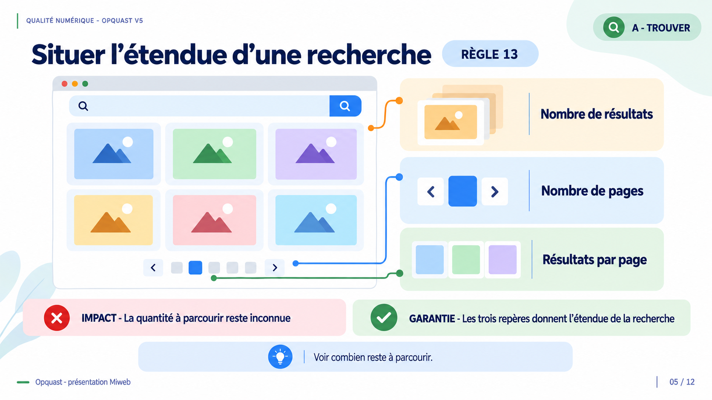
Règle 13
La page des résultats de recherche indique le nombre de résultats, le nombre de pages de résultats, et le nombre de résultats par page.
Impact
La quantité à parcourir reste inconnue.
Garantie
Les trois repères donnent l'étendue de la recherche.
Message à retenir
Voir combien reste à parcourir.
Mesurer le résultat
- Le nombre global de résultats donne immédiatement l'ordre de grandeur de la réponse.
- Lorsque les résultats sont paginés, le nombre total de pages et le nombre de résultats par page complètent cette information.
- Ces repères doivent rester présents sur chaque page de résultats concernée.
Impact du non-respect
- L'utilisateur ignore s'il doit examiner quelques éléments ou une masse de contenus.
- Il ne peut pas estimer ce qu'il lui reste à parcourir.
Ce que garantit la règle
- La page indique le nombre global de résultats.
- En cas de pagination, elle indique aussi le nombre de pages et le nombre de résultats par page.
Transition
Trouver l'information ne suffit pas si sa formulation oblige à deviner.
Slide 6 - Lire une date sans hésiter
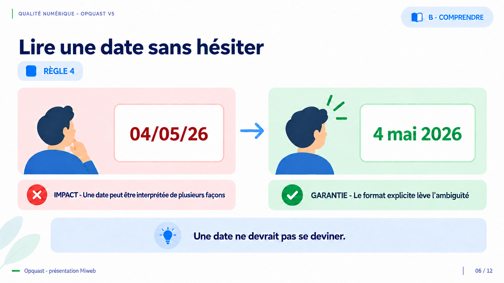
Règle 4
Les dates sont présentées dans des formats explicites.
Impact
Une date peut être interprétée de plusieurs façons.
Garantie
Le format explicite lève l'ambiguïté.
Message à retenir
Une date ne devrait pas se deviner.
Un format sans équivoque
- Un mois écrit en chiffres peut être confondu avec le jour selon les conventions de lecture.
- Le mois est donc écrit en toutes lettres ou sous une forme abrégée, et l'année comporte quatre chiffres.
- Cette règle traite le format d'une date, pas l'obligation d'afficher une date de publication.
Impact du non-respect
- Une même chaîne numérique peut conduire à plusieurs interprétations.
- Une erreur de date peut fausser la compréhension ou la réutilisation d'un contenu.
Ce que garantit la règle
- Les dates affichées utilisent un format explicite.
- Les dates saisies par l'utilisateur dans un formulaire ne sont pas concernées lorsqu'un sélecteur de date ou une indication du format attendu lève l'ambiguïté.
Transition
La même clarté s'applique aux sigles et au vocabulaire spécialisé.
Slide 7 - Donner accès au sens des termes
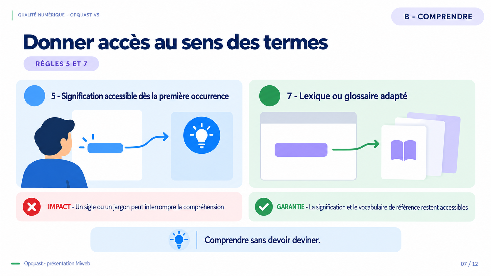
Règle 5
La première occurrence d'une abréviation ou d'un acronyme dans le corps de chaque page donne accès à sa signification.
Règle 7
Un lexique ou un glossaire adapté au public visé explique le vocabulaire sectoriel ou technique.
Impact
Un sigle ou un jargon peut interrompre la compréhension.
Garantie
La signification et le vocabulaire de référence restent accessibles.
Message à retenir
Comprendre sans devoir deviner.
Deux accès complémentaires
- La règle 5 vise la première occurrence de chaque abréviation ou acronyme dans le corps de chaque page.
- La signification peut être donnée dans le contexte, par un lien ou par un balisage approprié.
- La règle 7 vise le vocabulaire sectoriel ou technique et demande une ressource adaptée au public.
- Le glossaire peut être une section, une page accessible par la navigation ou une définition atteignable depuis la première occurrence du terme.
Impact du non-respect
- Un sigle inconnu interrompt immédiatement la lecture.
- Un vocabulaire spécialisé sans ressource de référence peut exclure le public visé.
Ce que garantit la règle
- La signification d'une abréviation ou d'un acronyme est accessible dès sa première occurrence dans la page.
- Le vocabulaire sectoriel ou technique est expliqué dans un lexique ou un glossaire adapté.
Transition
Au-delà des mots, le contexte permet d'évaluer ce que l'on lit.
Slide 8 - Donner le contexte pour décider
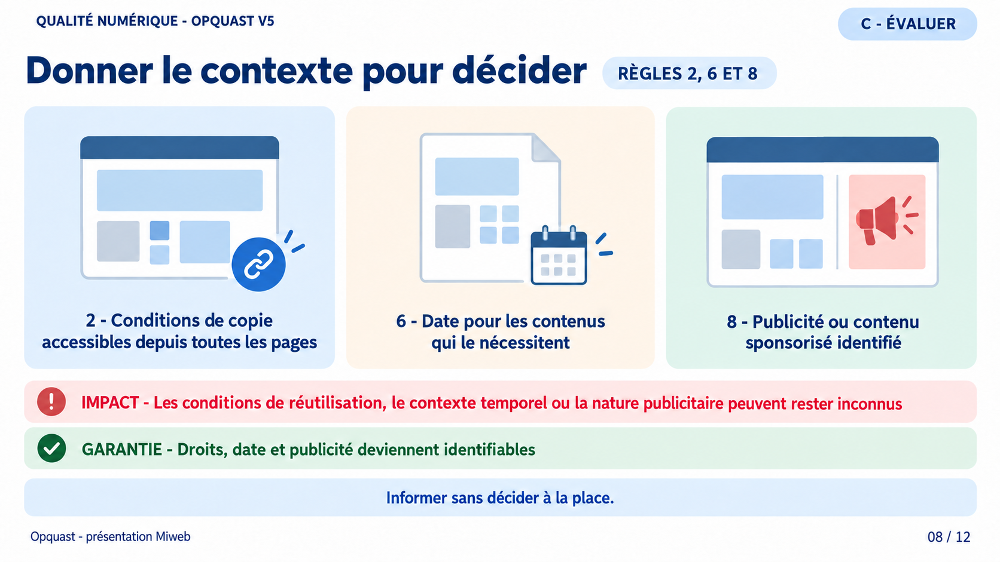
Règle 2
Les informations relatives aux droits de copie et de réutilisation sont disponibles depuis toutes les pages.
Règle 6
La date de publication des contenus qui le nécessitent est indiquée.
Règle 8
Les contenus publicitaires ou sponsorisés sont identifiés comme tels.
Impact
Les conditions de réutilisation, le contexte temporel ou la nature publicitaire peuvent rester inconnus.
Garantie
Droits, date et publicité deviennent identifiables.
Message à retenir
Informer sans décider à la place.
Trois informations de contexte
- La règle 2 rend les informations sur les droits disponibles depuis chaque page, directement ou par un lien qui y conduit.
- La règle 6 demande une date de publication pour les contenus qui en ont besoin, pas pour tout contenu sans distinction.
- La règle 8 impose d'identifier comme tels les contenus publicitaires ou sponsorisés.
Impact du non-respect
- L'utilisateur peut réutiliser un contenu sans connaître les droits applicables.
- Il peut prendre une information ancienne pour une information actuelle.
- Il peut confondre une publicité avec un contenu rédactionnel.
Ce que garantit la règle
- Les conditions de copie et de réutilisation sont accessibles depuis toutes les pages.
- La date de publication accompagne les contenus qui la nécessitent.
- La nature publicitaire ou sponsorisée est identifiable sans ambiguïté.
Point de vigilance
- Ces règles ne garantissent ni la vérité ni la fiabilité du contenu. Elles donnent des éléments pour l'évaluer.
Transition
Quand l'utilisateur contribue, la maîtrise doit couvrir tout le parcours.
Slide 9 - Participer en gardant la maîtrise
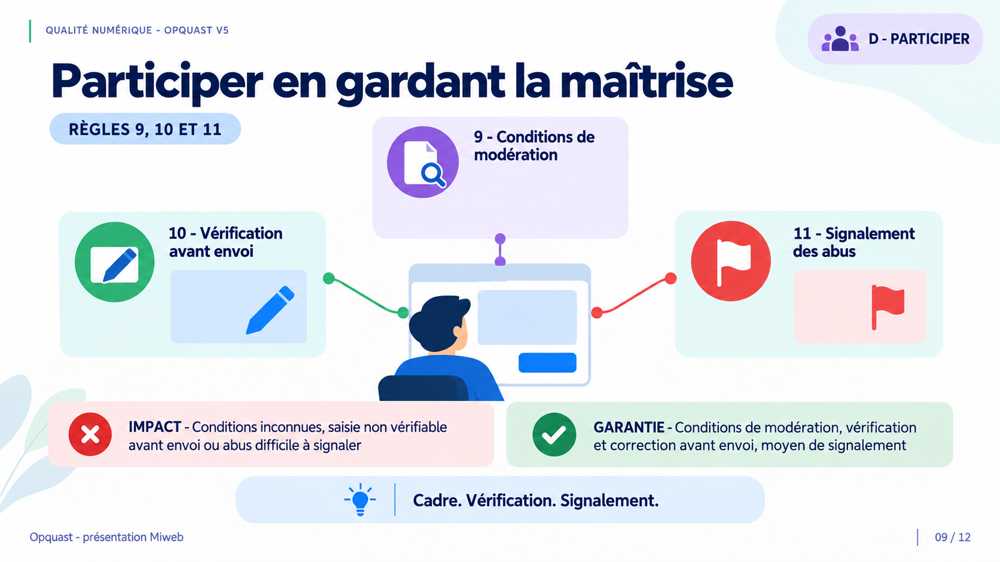
Règle 9
Les conditions de modération des espaces publics sont indiquées.
Règle 10
Les contenus ou fichiers destinés à des espaces publics peuvent être vérifiés avant leur envoi définitif.
Règle 11
Les espaces publics proposent au moins un moyen de signaler les abus.
Impact
Conditions inconnues, saisie non vérifiable avant envoi ou abus difficile à signaler.
Garantie
Conditions de modération, vérification et correction avant envoi, moyen de signalement.
Message à retenir
Cadre. Vérification. Signalement.
Trois points de maîtrise
- Pour un espace public soumis à modération, les conditions sont indiquées dans son contexte ou accessibles depuis celui-ci.
- Avant l'envoi définitif d'un contenu ou d'un fichier public, l'utilisateur peut vérifier le résultat et le corriger.
- Chaque espace public propose au moins un moyen identifiable de signaler un abus.
Impact du non-respect
- Une contribution peut être modérée selon des conditions inconnues.
- Une erreur ou un mauvais fichier peut être publié sans possibilité de contrôle préalable.
- Un contenu abusif peut rester sans procédure de signalement accessible.
Ce que garantit la règle
- Le cadre de modération est connu.
- La contribution peut être vérifiée et modifiée avant sa publication définitive.
- Au moins un moyen permet de signaler les abus.
Point de vigilance
- Cadre, vérification et signalement sont trois situations distinctes, pas trois étapes obligatoires d'un même parcours.
Transition
Les contenus doivent aussi rester exploitables au-delà de leur apparence.
Slide 10 - Relier chaque graphique à ses données
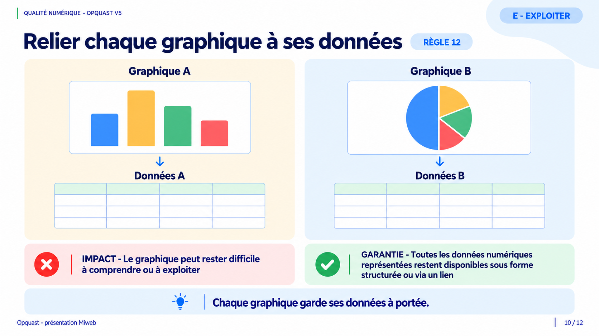
Règle 12
Chaque graphique est accompagné de ses données numériques.
Impact
Le graphique peut rester difficile à comprendre ou à exploiter.
Garantie
Toutes les données numériques représentées restent disponibles sous forme structurée ou via un lien.
Message à retenir
Chaque graphique garde ses données à portée.
Préserver l'association
- Un graphique représente des valeurs, mais il ne permet pas toujours de les lire avec précision.
- Pour chaque graphique, toutes les données numériques représentées sont fournies dans un contenu structuré.
- Ce contenu se trouve dans le contexte immédiat du graphique ou est atteint par un lien placé dans ce même contexte.
Impact du non-respect
- Une personne peut ne pas percevoir correctement la représentation.
- Elle peut être privée des valeurs exactes nécessaires pour comprendre, copier, réutiliser ou traiter les données.
Ce que garantit la règle
- Chaque graphique conserve une association claire avec toutes ses données numériques.
- Un jeu de données global sans relation identifiable avec chaque graphique ne suffit pas.
Transition
Les données restent exploitables si le texte conserve lui aussi ses caractères.
Slide 11 - Même apparence, caractères différents
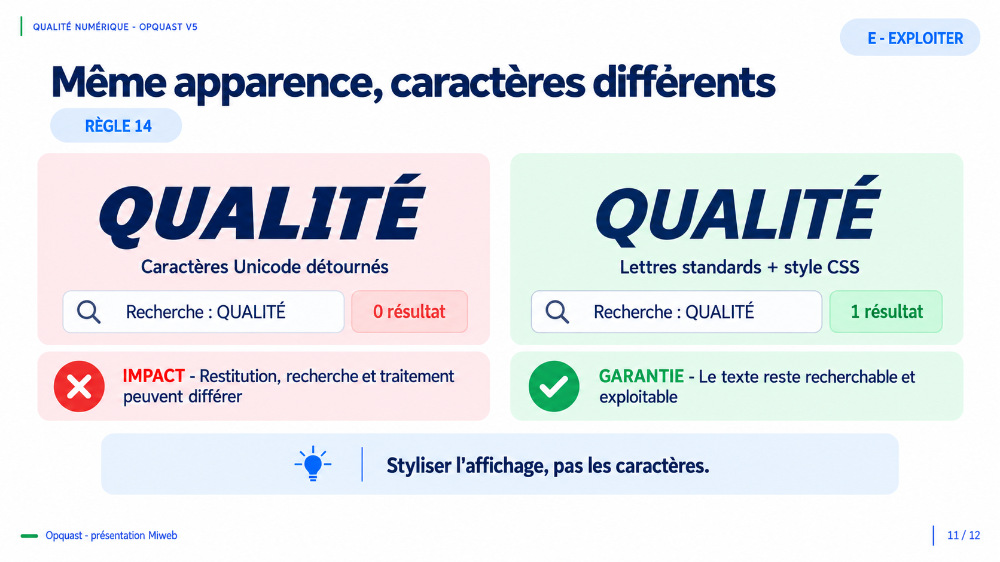
Règle 14
Les contenus ne détournent pas de caractères pour simuler une mise en forme visuelle.
Test de recherche
- 𝙌𝙐𝘼𝙇𝙄𝙏É utilise des caractères Unicode détournés. Une recherche de QUALITÉ renvoie zéro résultat.
- QUALITÉ conserve les lettres standards et reçoit son italique par le style CSS. La même recherche renvoie un résultat.
Impact
Restitution, recherche et traitement peuvent différer.
Garantie
Le texte reste recherchable et exploitable.
Message à retenir
Styliser l'affichage, pas les caractères.
Même apparence, caractères différents
- Deux chaînes peuvent se ressembler visuellement tout en utilisant des caractères différents.
- Les deux écritures sont disponibles sous forme de texte dans la transcription et peuvent être copiées.
- QUALITÉ emploie les lettres standards.
- 𝙌𝙐𝘼𝙇𝙄𝙏É utilise des caractères Unicode mathématiques pour simuler une mise en forme.
- Dans le test affiché, une recherche exacte de QUALITÉ retrouve la chaîne en lettres standards et ne retrouve pas la chaîne composée de caractères détournés.
- Le gras, l'italique ou un autre effet visuel doit être appliqué avec les mécanismes de mise en forme, notamment CSS sur le Web.
Impact du non-respect
- Le mot peut être prononcé, retrouvé, indexé ou traité différemment selon l'outil.
- Une ressemblance visuelle ne garantit donc pas une information équivalente.
Ce que garantit la règle
- Les contenus conservent les caractères qui correspondent réellement au texte.
- Le style change la présentation sans remplacer les caractères.
Transition
Les quatorze règles convergent vers une information utile dans le parcours réel.
Slide 12 - Un contenu qui reste utile
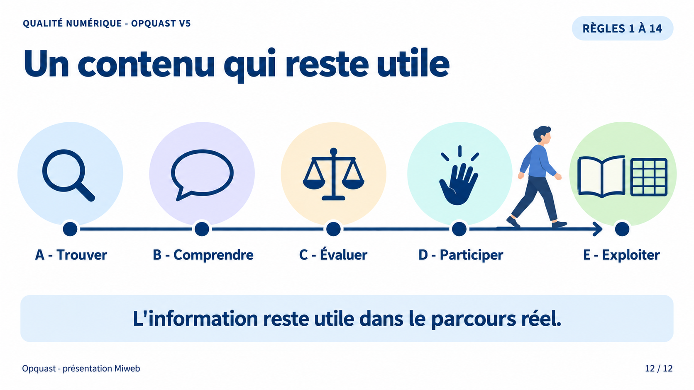
Les cinq capacités
- A - Trouver
- B - Comprendre
- C - Évaluer
- D - Participer
- E - Exploiter
Périmètre
Règles 1 à 14.
Message final
L'information reste utile dans le parcours réel.
Message à retenir
L'information reste utile dans le parcours réel.
Résultat attendu
- L'utilisateur repère les nouveautés, identifie les pages et mesure l'étendue d'une recherche.
- Il comprend les dates, les sigles et le vocabulaire spécialisé sans devoir deviner.
- Il dispose du contexte nécessaire pour connaître les droits, situer un contenu dans le temps et reconnaître la publicité.
- Il contribue en connaissant la modération, en vérifiant son envoi et en pouvant signaler un abus.
- Il retrouve les données des graphiques et conserve un texte exploitable par différents outils.
Conclusion
Les règles 1 à 14 ne jugent pas à elles seules la valeur du contenu. Elles préviennent des risques concrets pour que l'information reste utile dans le parcours réel.